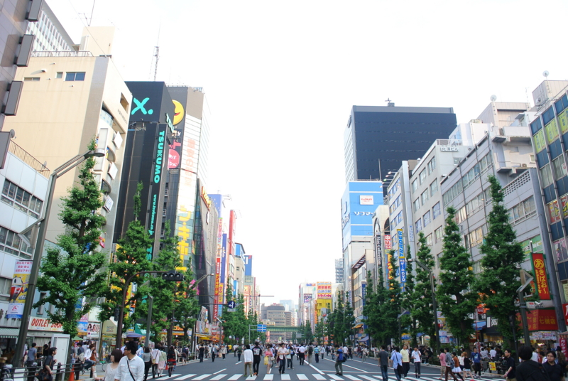
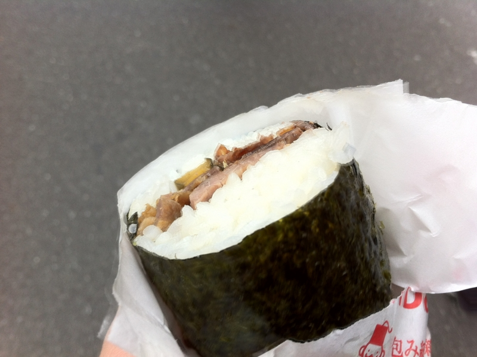
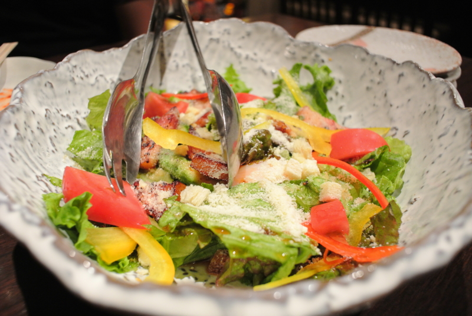
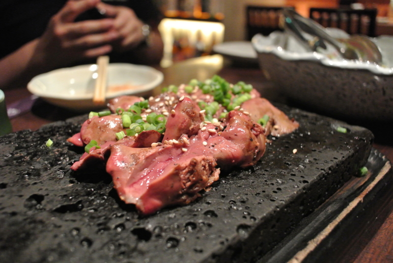
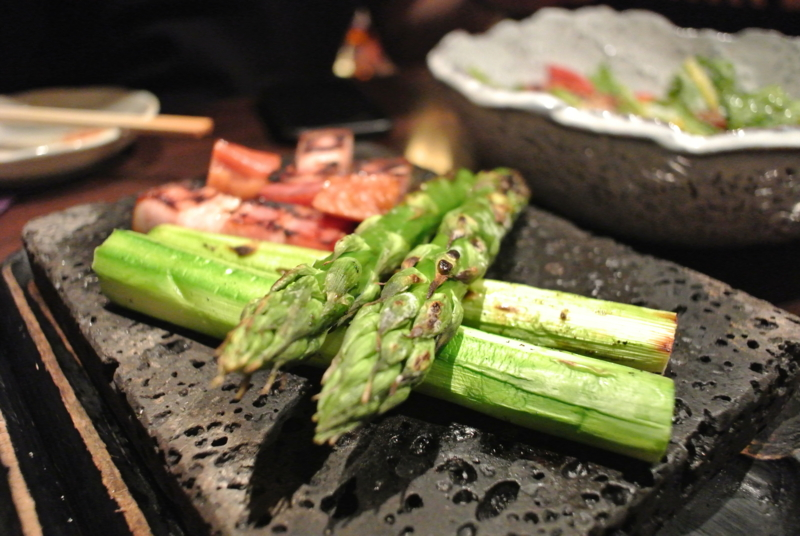
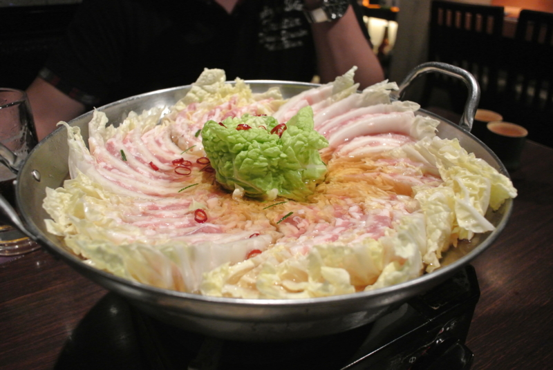

レッサーパンダを秋葉原に連れて行った
公開日：

@tyorosan が東京に来てくれたので、秋葉原を少し案内。といっても、わしもそれほど詳しくはないのだけど。

とにかく、ずっと食べたかったのに食べる機会がなかったケバブ海苔巻きを半強制的に半分こっこ*1。個人的にはちょっと味が足りないので、なにかソースを付けてもらうといいかもしれない。辛いのとかいろいろあるっぽいので。量は……想像以上に多い。1本400円なのだけど、そんなにお腹が空いていなければこれ一本で十分だと思う。
@shibayan に教えてもらったメイド喫茶にもいった。そこは別に卑猥（？）な感じではなくて、ただ店員さんがメイド服ってだけ（それはそれでイイんだけど！）。私設図書館のイメージらしくて、おもにファンタジー系の本を自由に読むことができる。紅茶のおかわりが自由で、30分につき500円。
そのあとは、あとから参加した @penguineJr1 さん*2を加えて、ちょっとした飲み会。

ちょび＆姉ちゃんの『アキバでごはん食べたいな。』 〜和食居酒屋「本家いなせや 秋葉原昭和通り店」編〜 へ行ったのだけど、なかなかコストパフォーマンスが良くて満足。秋葉原というか、ほとんど岩本町にある立地の微妙さだけが弱点か。豚バラ肉と白菜を交互に挟んだミルフィーユ鍋は、家でも簡単にできそう……冬になったら試してみよう！